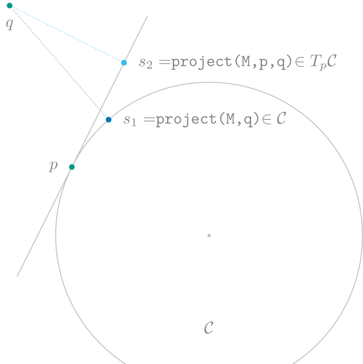

ManifoldsBase.jl – an interface for manifolds
The interface for a manifold is provided in the lightweight package ManifoldsBase.jl. You can easily implement your algorithms and even your own manifolds just using the interface. All manifolds from the package here are also based on this interface, so any project based on the interface can benefit from all manifolds, as soon as a certain manifold provides implementations of the functions a project requires.
Additionally the AbstractDecoratorManifold is provided as well as the ValidationManifold as a specific example of such a decorator.
Types and functions
The following functions are currently available from the interface. If a manifold that you implement for your own package fits this interface, we happily look forward to a Pull Request to add it here.
We would like to highlight a few of the types and functions in the next two sections before listing the remaining types and functions alphabetically.
The Manifold Type
Besides the most central type, that of an AbstractManifold accompanied by AbstractManifoldPoint to represent points thereon, note that the point type is meant in a lazy fashion. This is mean as follows: if you implement a new manifold and your points are represented by matrices, vectors or arrays, then it is best to not restrict types of the points p in functions, such that the methods work for example for other array representation types as well. You should subtype your new points on a manifold, if the structure you use is more structured, see for example FixedRankMatrices. Another reason is, if you want to distinguish (and hence dispatch on) different representation of points on the manifold. For an example, see the Hyperbolic manifold, which has different models to be represented.
ManifoldsBase.AbstractManifold — TypeAbstractManifold{F}A manifold type. The AbstractManifold is used to dispatch to different functions on a manifold, usually as the first argument of the function. Examples are the exponential and logarithmic maps as well as more general functions that are built on them like the geodesic.
The manifold is parametrized by an AbstractNumbers to distinguish for example real (ℝ) and complex (ℂ) manifolds.
For subtypes the preferred order of parameters is: size and simple value parameters, followed by the AbstractNumbers field, followed by data type parameters, which might depend on the abstract number field type.
For more details see interface-types-and-functions in the ManifoldsBase.jl documentation at https://juliamanifolds.github.io/Manifolds.jl/stable/interface.html#Types-and-functions.
ManifoldsBase.AbstractManifoldPoint — TypeAbstractManifoldPointType for a point on a manifold. While a AbstractManifold does not necessarily require this type, for example when it is implemented for Vectors or Matrix type elements, this type can be used for more complicated representations, semantic verification, or even dispatch for different representations of points on a manifold.
The exponential and the logarithmic map, and geodesics
Geodesics are the generalizations of a straight line to manifolds, i.e. their intrinsic acceleration is zero. Together with geodesics one also obtains the exponential map and its inverse, the logarithmic map. Informally speaking, the exponential map takes a vector (think of a direction and a length) at one point and returns another point, which lies towards this direction at distance of the specified length. The logarithmic map does the inverse, i.e. given two points, it tells which vector “points towards” the other point.
Base.exp — Methodexp(M::AbstractManifold, p, X)
exp(M::AbstractManifold, p, X, t::Real = 1)Compute the exponential map of tangent vector X, optionally scaled by t, at point p from the manifold AbstractManifold M, i.e.
\[\exp_p X = γ_{p,X}(1),\]
where $γ_{p,X}$ is the unique geodesic starting in $γ(0)=p$ such that $\dot γ(0) = X$.
See also shortest_geodesic, retract.
Base.log — Methodlog(M::AbstractManifold, p, q)Compute the logarithmic map of point q at base point p on the AbstractManifold M. The logarithmic map is the inverse of the exponential map. Note that the logarithmic map might not be globally defined.
See also inverse_retract.
ManifoldsBase.exp! — Methodexp!(M::AbstractManifold, q, p, X)
exp!(M::AbstractManifold, q, p, X, t::Real = 1)Compute the exponential map of tangent vector X, optionally scaled by t, at point p from the manifold AbstractManifold M. The result is saved to q.
See also exp.
ManifoldsBase.geodesic — Methodgeodesic(M::AbstractManifold, p, X) -> FunctionGet the geodesic with initial point p and velocity X on the AbstractManifold M. A geodesic is a curve of zero acceleration. That is for the curve $γ_{p,X}: I → \mathcal M$, with $γ_{p,X}(0) = p$ and $\dot γ_{p,X}(0) = X$ a geodesic further fulfills
\[∇_{\dot γ_{p,X}(t)} \dot γ_{p,X}(t) = 0,\]
i.e. the curve is acceleration free with respect to the Riemannian metric. This yields, that the curve has constant velocity that is locally distance-minimizing.
This function returns a function of (time) t.
geodesic(M::AbstractManifold, p, X, t::Real)
geodesic(M::AbstractManifold, p, X, T::AbstractVector) -> AbstractVectorReturn the point at time t or points at times t in T along the geodesic.
ManifoldsBase.log! — Methodlog!(M::AbstractManifold, X, p, q)Compute the logarithmic map of point q at base point p on the AbstractManifold M. The result is saved to X. The logarithmic map is the inverse of the exp!onential map. Note that the logarithmic map might not be globally defined.
see also log and inverse_retract!,
ManifoldsBase.shortest_geodesic — Methodshortest_geodesic(M::AbstractManifold, p, q) -> FunctionGet a geodesic $γ_{p,q}(t)$ whose length is the shortest path between the points pand q, where $γ_{p,q}(0)=p$ and $γ_{p,q}(1)=q$. When there are multiple shortest geodesics, a deterministic choice will be returned.
This function returns a function of time, which may be a Real or an AbstractVector.
shortest_geodesic(M::AabstractManifold, p, q, t::Real)
shortest_geodesic(M::AbstractManifold, p, q, T::AbstractVector) -> AbstractVectorReturn the point at time t or points at times t in T along the shortest geodesic.
Retractions and inverse Retractions
The exponential and logarithmic map might be too expensive to evaluate or not be available in a very stable numerical way. Retractions provide a possibly cheap, fast and stable alternative.
The following figure compares the exponential map exp(M, p, X) on the Circle(ℂ) (or Sphere(1) embedded in $ℝ^2$ with one possible retraction, the one based on projections. Note especially that $\mathrm{dist}(p,q)=\lVert X\rVert_p$ while this is not the case for $q'$.
ManifoldsBase.default_inverse_retraction_method — Methoddefault_inverse_retraction_method(M::AbstractManifold)The AbstractInverseRetractionMethod that is used when calling inverse_retract without specifying the inverse retraction method. By default, this is the LogarithmicInverseRetraction.
ManifoldsBase.default_retraction_method — Methoddefault_retraction_method(M::AbstractManifold)The AbstractRetractionMethod that is used when calling retract without specifying the retraction method. By default, this is the ExponentialRetraction.
ManifoldsBase.inverse_retract! — Methodinverse_retract!(M::AbstractManifold, X, p, q[, method::AbstractInverseRetractionMethod])Compute the inverse retraction, a cheaper, approximate version of the logarithmic map), of points p and q on the AbstractManifold M. Result is saved to X.
Inverse retraction method can be specified by the last argument, defaulting to default_inverse_retraction_method(M). See the documentation of respective manifolds for available methods.
See also retract!.
ManifoldsBase.inverse_retract — Methodinverse_retract(M::AbstractManifold, p, q)
inverse_retract(M::AbstractManifold, p, q, method::AbstractInverseRetractionMethodCompute the inverse retraction, a cheaper, approximate version of the logarithmic map), of points p and q on the AbstractManifold M.
Inverse retraction method can be specified by the last argument, defaulting to default_inverse_retraction_method(M). For available inverse retractions on certain manifolds see the documentation on the corresponding manifold.
See also retract.
ManifoldsBase.retract! — Methodretract!(M::AbstractManifold, q, p, X)
retract!(M::AbstractManifold, q, p, X, t::Real=1)
retract!(M::AbstractManifold, q, p, X, method::AbstractRetractionMethod)
retract!(M::AbstractManifold, q, p, X, t::Real=1, method::AbstractRetractionMethod)Compute a retraction, a cheaper, approximate version of the exponential map, from p into direction X, scaled by t, on the AbstractManifold manifold M. Result is saved to q.
Retraction method can be specified by the last argument, defaulting to default_retraction_method(M). See the documentation of respective manifolds for available methods.
See retract for more details.
ManifoldsBase.retract — Methodretract(M::AbstractManifold, p, X)
retract(M::AbstractManifold, p, X, t::Real=1)
retract(M::AbstractManifold, p, X, method::AbstractRetractionMethod)
retract(M::AbstractManifold, p, X, t::Real=1, method::AbstractRetractionMethod)Compute a retraction, a cheaper, approximate version of the exponential map, from p into direction X, scaled by t, on the AbstractManifold M.
A retraction $\operatorname{retr}_p: T_p\mathcal M → \mathcal M$ is a smooth map that fulfills
- $\operatorname{retr}_p(0) = p$
- $D\operatorname{retr}_p(0): T_p\mathcal M \to T_p\mathcal M$ is the identity map, i.e. $D\operatorname{retr}_p(0)[X]=X$,
where $D\operatorname{retr}_p$ denotes the differential of the retraction
The retraction is called of second order if for all $X$ the curves $c(t) = R_p(tX)$ have a zero acceleration at $t=0$, i.e. $c''(0) = 0$.
Retraction method can be specified by the last argument, defaulting to default_retraction_method(M). For further available retractions see the documentation of respective manifolds.
Locally, the retraction is invertible. For the inverse operation, see inverse_retract.
To distinguish different types of retractions, the last argument of the (inverse) retraction specifies a type. The following ones are available.
ManifoldsBase.AbstractInverseRetractionMethod — TypeAbstractInverseRetractionMethodAbstract type for methods for inverting a retraction (see inverse_retract).
ManifoldsBase.AbstractRetractionMethod — TypeAbstractRetractionMethodAbstract type for methods for retracting a tangent vector to a manifold.
ManifoldsBase.ApproximateInverseRetraction — TypeApproximateInverseRetraction <: AbstractInverseRetractionMethodAn abstract type for representing approximate inverse retraction methods.
ManifoldsBase.ApproximateRetraction — TypeApproximateRetraction <: AbstractInverseRetractionMethodAn abstract type for representing approximate retraction methods.
ManifoldsBase.ExponentialRetraction — TypeExponentialRetractionRetraction using the exponential map.
ManifoldsBase.LogarithmicInverseRetraction — TypeLogarithmicInverseRetractionInverse retraction using the logarithmic map.
ManifoldsBase.NLsolveInverseRetraction — TypeNLsolveInverseRetraction{T<:AbstractRetractionMethod,TV,TK} <:
ApproximateInverseRetractionAn inverse retraction method for approximating the inverse of a retraction using NLsolve.
Constructor
NLsolveInverseRetraction(
method::AbstractRetractionMethod[, X0];
project_tangent=false,
project_point=false,
nlsolve_kwargs...,
)Constructs an approximate inverse retraction for the retraction method with initial guess X0, defaulting to the zero vector. If project_tangent is true, then the tangent vector is projected before the retraction using project. If project_point is true, then the resulting point is projected after the retraction. nlsolve_kwargs are keyword arguments passed to NLsolve.nlsolve.
ManifoldsBase.PolarInverseRetraction — TypePolarInverseRetraction <: AbstractInverseRetractionMethodInverse retractions that are based on a singular value decomposition of the matrix / matrices for point and tangent vector on a AbstractManifold
ManifoldsBase.PolarRetraction — TypePolarRetraction <: AbstractRetractionMethodRetractions that are based on singular value decompositions of the matrix / matrices for point and tangent vector on a AbstractManifold
ManifoldsBase.ProjectionInverseRetraction — TypeProjectionInverseRetraction <: AbstractInverseRetractionMethodInverse retractions that are based on a projection (or its inversion).
ManifoldsBase.ProjectionRetraction — TypeProjectionRetraction <: AbstractRetractionMethodRetractions that are based on projection and usually addition in the embedding.
ManifoldsBase.QRInverseRetraction — TypeQRInverseRetraction <: AbstractInverseRetractionMethodInverse retractions that are based on a QR decomposition of the matrix / matrices for point and tangent vector on a AbstractManifold
ManifoldsBase.QRRetraction — TypeQRRetraction <: AbstractRetractionMethodRetractions that are based on a QR decomposition of the matrix / matrices for point and tangent vector on a AbstractManifold
Projections
A manifold might be embedded in some space. Often this is implicitly assumed, for example the complex Circle is embedded in the complex plane. Let‘s keep the circle in mind in the following as a simple example. For the general case see of explicitly stating an embedding and/or distinguising several, different embeddings, see Embedded Manifolds below.
To make this a little more concrete, let‘s assume we have a manifold $\mathcal M$ which is embedded in some manifold $\mathcal N$ and the image $i(\mathcal M)$ of the embedding function $i$ is a closed set (with respect to the topology on $\mathcal N$). Then we can do two kinds of projections.
To make this concrete in an example for the Circle $\mathcal M=\mathcal C := \{ p ∈ ℂ | |p| = 1\}$ the embedding can be chosen to be the manifold $N = ℂ$ and due to our representation of $\mathcal C$ as complex numbers already, we have $i(p) = p$ the identity as the embedding function.
- Given a point $p∈\mathcal N$ we can look for the closest point on the manifold $\mathcal M$ formally as
\[ \operatorname*{arg\,min}_{q\in \mathcal M} d_{\mathcal N}(i(q),p)\]
And this resulting $q$ we call the projection of $p$ onto the manifold $\mathcal M$.
- Given a point $p∈\mathcal M$ and a vector in $X\inT_{i(p)}\mathcal N$ in the embedding we can similarly look for the closest point to $Y∈ T_p\mathcal M$ using the pushforward $\mathrm{d}i_p$ of the embedding.
\[ \operatorname*{arg\,min}_{Y\in T_p\mathcal M} \lVert \mathrm{d}i(p)[Y] - X \rVert_{i(p)}\]
And we call the resulting $Y$ the projection of $X$ onto the tangent space $T_p\mathcal M$ at $p$.
Let‘s look at the little more concrete example of the complex Circle again. Here, the closest point of $p ∈ ℂ$ is just the projection onto the circle, or in other words $q = \frac{p}{\lvert p \rvert}$. A tangent space $T_p\mathcal C$ in the embedding is the line orthogonal to a point $p∈\mathcal C$ through the origin. This can be better visualized by looking at $p+T_p\mathcal C$ which is actually the line tangent to $p$. Note that this shift does not change the resulting projection relative to the origin of the tangent space.
Here the projection can be computed as the classical projection onto the line, i.e. $Y = X - ⟨X,p⟩X$.
this is illustrated in the following figure

ManifoldsBase.project! — Methodproject!(M::AbstractManifold, Y, p, X)Project ambient space representation of a vector X to a tangent vector at point p on the AbstractManifold M. The result is saved in vector Y. This method is only available for manifolds where implicitly an embedding or ambient space is given. Additionally, project! includes changing data representation, if applicable, i.e. if the tangents on M are not represented in the same way as points on the embedding, the representation is changed accordingly. This is the case for example for Lie groups, when tangent vectors are represented in the Lie algebra. after projection the change to the Lie algebra is perfomed, too.
See also: EmbeddedManifold, embed!
ManifoldsBase.project! — Methodproject!(M::AbstractManifold, q, p)Project point p from the ambient space onto the AbstractManifold M. The result is storedin q. This method is only available for manifolds where implicitly an embedding or ambient space is given. Additionally, the projection includes changing data representation, if applicable, i.e. if the points on M are not represented in the same array data, the data is changed accordingly.
See also: EmbeddedManifold, embed!
ManifoldsBase.project — Methodproject(M::AbstractManifold, p, X)Project ambient space representation of a vector X to a tangent vector at point p on the AbstractManifold M. This method is only available for manifolds where implicitly an embedding or ambient space is given. Additionally, project includes changing data representation, if applicable, i.e. if the tangents on M are not represented in the same way as points on the embedding, the representation is changed accordingly. This is the case for example for Lie groups, when tangent vectors are represented in the Lie algebra. after projection the change to the Lie algebra is perfomed, too.
See also: EmbeddedManifold, embed
ManifoldsBase.project — Methodproject(M::AbstractManifold, p)Project point p from the ambient space of the AbstractManifold M to M. This method is only available for manifolds where implicitly an embedding or ambient space is given. Additionally, the projection includes changing data representation, if applicable, i.e. if the points on M are not represented in the same array data, the data is changed accordingly.
See also: EmbeddedManifold, embed
Remaining functions
ManifoldsBase.OutOfInjectivityRadiusError — TypeOutOfInjectivityRadiusErrorAn error thrown when a function (for example logarithmic map or inverse_retract) is given arguments outside of its injectivity_radius.
Base.angle — Methodangle(M::AbstractManifold, p, X, Y)Compute the angle between tangent vectors X and Y at point p from the AbstractManifold M with respect to the inner product from inner.
Base.copy — Methodcopy(M, p, X)Copy the value(s) from the tangent vector X at a point p on the AbstractManifold M into a new tangent vector. See allocate_result for the allocation of new point memory and copyto! for the copying.
Base.copy — Methodcopy(M, p)Copy the value(s) from the point p on the AbstractManifold M into a new point. See allocate_result for the allocation of new point memory and copyto! for the copying.
Base.copyto! — Methodcopyto!(M::AbstractManifold, Y, p, X)Copy the value(s) from X to Y, where both are tangent vectors from the tangent space at p on the AbstractManifold M. This function defaults to calling copyto!(Y, X), but it might be useful to overwrite the function at the level, where also information from p and M can be accessed.
Base.copyto! — Methodcopyto!(M::AbstractManifold, q, p)Copy the value(s) from p to q, where both are points on the AbstractManifold M. This function defaults to calling copyto!(q, p), but it might be useful to overwrite the function at the level, where also information from M can be accessed.
Base.isapprox — Methodisapprox(M::AbstractManifold, p, X, Y; kwargs...)Check if vectors X and Y tangent at p from AbstractManifold M are approximately equal.
Keyword arguments can be used to specify tolerances.
Base.isapprox — Methodisapprox(M::AbstractManifold, p, q; kwargs...)Check if points p and q from AbstractManifold M are approximately equal.
Keyword arguments can be used to specify tolerances.
LinearAlgebra.norm — Methodnorm(M::AbstractManifold, p, X)Compute the norm of tangent vector X at point p from a AbstractManifold M. By default this is computed using inner.
ManifoldsBase.allocate — Methodallocate(a)
allocate(a, dims::Integer...)
allocate(a, dims::Tuple)
allocate(a, T::Type)
allocate(a, T::Type, dims::Integer...)
allocate(a, T::Type, dims::Tuple)Allocate an object similar to a. It is similar to function similar, although instead of working only on the outermost layer of a nested structure, it maps recursively through outer layers and calls similar on the innermost array-like object only. Type T is the new number element type number_eltype, if it is not given the element type of a is retained. The dims argument can be given for non-nested allocation and is forwarded to the function similar.
ManifoldsBase.allocate_result — Methodallocate_result(M::AbstractManifold, f, x...)Allocate an array for the result of function f on AbstractManifold M and arguments x... for implementing the non-modifying operation using the modifying operation.
Usefulness of passing a function is demonstrated by methods that allocate results of musical isomorphisms.
ManifoldsBase.allocate_result_type — Methodallocate_result_type(M::AbstractManifold, f, args::NTuple{N,Any}) where NReturn type of element of the array that will represent the result of function f and the AbstractManifold M on given arguments args (passed as a tuple).
ManifoldsBase.base_manifold — Functionbase_manifold(M::AbstractManifold, depth = Val(-1))Return the internally stored AbstractManifold for decorated manifold M and the base manifold for vector bundles or power manifolds. The optional parameter depth can be used to remove only the first depth many decorators and return the AbstractManifold from that level, whether its decorated or not. Any negative value deactivates this depth limit.
ManifoldsBase.check_point — Methodcheck_point(M::AbstractManifold, p; kwargs...) -> Union{Nothing,String}Return nothing when p is a point on the AbstractManifold M. Otherwise, return an error with description why the point does not belong to manifold M.
By default, check_point returns nothing, i.e. if no checks are implemented, the assumption is to be optimistic for a point not deriving from the AbstractManifoldPoint type.
ManifoldsBase.check_size — Methodcheck_size(M::AbstractManifold, p)
check_size(M::AbstractManifold, p, X)Check whether p has the right representation_size for a AbstractManifold M. Additionally if a tangent vector is given, both p and X are checked to be of corresponding correct representation sizes for points and tangent vectors on M.
By default, check_size returns nothing, i.e. if no checks are implemented, the assumption is to be optimistic.
ManifoldsBase.check_vector — Methodcheck_vector(M::AbstractManifold, p, X; kwargs...) -> Union{Nothing,String}Check whether X is a valid tangent vector in the tangent space of p on the AbstractManifold M. An implementation does not have to validate the point p. If it is not a tangent vector, an error string should be returned.
By default, check_vector returns nothing, i.e. if no checks are implemented, the assumption is to be optimistic for tangent vectors not deriving from the TVector type.
ManifoldsBase.distance — Methoddistance(M::AbstractManifold, p, q)Shortest distance between the points p and q on the AbstractManifold M, i.e.
\[d(p,q) = \inf_{γ} L(γ),\]
where the infimum is over all piecewise smooth curves $γ: [a,b] \to \mathcal M$ connecting $γ(a)=p$ and $γ(b)=q$ and
\[L(γ) = \displaystyle\int_{a}^{b} \lVert \dotγ(t)\rVert_{γ(t)} \mathrm{d}t\]
is the length of the curve $γ$.
If $\mathcal M$ is not connected, i.e. consists of several disjoint components, the distance between two points from different components should be $∞$.
ManifoldsBase.embed! — Methodembed!(M::AbstractManifold, Y, p, X)Embed a tangent vector X at a point p on the AbstractManifold M into the ambient space and return the result in Y. This method is only available for manifolds where implicitly an embedding or ambient space is given. Additionally, embed! includes changing data representation, if applicable, i.e. if the tangents on M are not represented in the same way as tangents on the embedding, the representation is changed accordingly. This is the case for example for Lie groups, when tangent vectors are represented in the Lie algebra. The embedded tangents are then in the tangent spaces of the embedded base points.
See also: EmbeddedManifold, project!
ManifoldsBase.embed! — Methodembed!(M::AbstractManifold, q, p)Embed point p from the AbstractManifold M into an ambient space. This method is only available for manifolds where implicitly an embedding or ambient space is given. Not implementing this function means, there is no proper embedding for your manifold. Additionally, embed might include changing data representation, if applicable, i.e. if points on M are not represented in the same way as their counterparts in the embedding, the representation is changed accordingly.
If you have more than one embedding, see EmbeddedManifold for defining a second embedding. If your point p is already represented in some embedding, see AbstractEmbeddedManifold how you can avoid reimplementing code from the embedded manifold
See also: EmbeddedManifold, project!
ManifoldsBase.embed — Methodembed(M::AbstractManifold, p, X)Embed a tangent vector X at a point p on the AbstractManifold M into an ambient space. This method is only available for manifolds where implicitly an embedding or ambient space is given. Not implementing this function means, there is no proper embedding for your tangent space(s).
Additionally, embed might include changing data representation, if applicable, i.e. if tangent vectors on M are not represented in the same way as their counterparts in the embedding, the representation is changed accordingly.
If you have more than one embedding, see EmbeddedManifold for defining a second embedding. If your tangent vector X is already represented in some embedding, see AbstractEmbeddedManifold how you can avoid reimplementing code from the embedded manifold
See also: EmbeddedManifold, project
ManifoldsBase.embed — Methodembed(M::AbstractManifold, p)Embed point p from the AbstractManifold M into the ambient space. This method is only available for manifolds where implicitly an embedding or ambient space is given. Additionally, embed includes changing data representation, if applicable, i.e. if the points on M are not represented in the same way as points on the embedding, the representation is changed accordingly.
See also: EmbeddedManifold, project
ManifoldsBase.injectivity_radius — Methodinjectivity_radius(M::AbstractManifold, p)Return the distance $d$ such that exp(M, p, X) is injective for all tangent vectors shorter than $d$ (i.e. has an inverse).
injectivity_radius(M::AbstractManifold)Infimum of the injectivity radius of all manifold points.
injectivity_radius(M::AbstractManifold[, x], method::AbstractRetractionMethod)
injectivity_radius(M::AbstractManifold, x, method::AbstractRetractionMethod)Distance $d$ such that retract(M, p, X, method) is injective for all tangent vectors shorter than $d$ (i.e. has an inverse) for point p if provided or all manifold points otherwise.
ManifoldsBase.inner — Methodinner(M::AbstractManifold, p, X, Y)Compute the inner product of tangent vectors X and Y at point p from the AbstractManifold M.
See also: MetricManifold
ManifoldsBase.is_point — Functionis_point(M::AbstractManifold, p, throw_error = false; kwargs...)Return whether p is a valid point on the AbstractManifold M.
If throw_error is false, the function returns either true or false. If throw_error is true, the function either returns true or throws an error. By default the function calls check_point(M, p; kwargs...) and checks whether the returned value is nothing or an error.
ManifoldsBase.is_vector — Functionis_vector(M::AbstractManifold, p, X, throw_error = false; check_base_point=true, kwargs...)Return whether X is a valid tangent vector at point p on the AbstractManifold M. Returns either true or false.
If throw_error is false, the function returns either true or false. If throw_error is true, the function either returns true or throws an error. By default the function calls check_vector(M, p, X; kwargs...) and checks whether the returned value is nothing or an error.
If check_base_point is true, then the point p will be first checked using the check_point function.
ManifoldsBase.manifold_dimension — Methodmanifold_dimension(M::AbstractManifold)The dimension $n=\dim_{\mathcal M}$ of real space $\mathbb R^n$ to which the neighborhood of each point of the AbstractManifold M is homeomorphic.
ManifoldsBase.mid_point! — MethodManifoldsBase.mid_point — MethodManifoldsBase.number_eltype — Methodnumber_eltype(x)Numeric element type of the a nested representation of a point or a vector. To be used in conjuntion with allocate or allocate_result.
ManifoldsBase.representation_size — Methodrepresentation_size(M::AbstractManifold)The size of an array representing a point on AbstractManifold M. Returns nothing by default indicating that points are not represented using an AbstractArray.
ManifoldsBase.size_to_tuple — Methodsize_to_tuple(::Type{S}) where S<:TupleConverts a size given by Tuple{N, M, ...} into a tuple (N, M, ...).
ManifoldsBase.zero_vector! — Methodzero_vector!(M::AbstractManifold, X, p)Save to X the tangent vector from the tangent space $T_p\mathcal M$ at p that represents the zero vector, i.e. such that retracting X to the AbstractManifold M at p produces p.
ManifoldsBase.zero_vector — Methodzero_vector(M::AbstractManifold, p)Return the tangent vector from the tangent space $T_p\mathcal M$ at p on the AbstractManifold M, that represents the zero vector, i.e. such that a retraction at p produces p.
Number systems
ManifoldsBase.AbstractNumbers — TypeAbstractNumbersAn abstract type to represent the number system on which a manifold is built.
This provides concrete number types for dispatch. The two most common number types are the fields RealNumbers (ℝ for short) and ComplexNumbers (ℂ).
ManifoldsBase.ComplexNumbers — TypeComplexNumbers <: AbstractNumbers
ℂ = ComplexNumbers()The field of complex numbers.
ManifoldsBase.QuaternionNumbers — TypeQuaternionNumbers <: AbstractNumbers
ℍ = QuaternionNumbers()The division algebra of quaternions.
ManifoldsBase.RealNumbers — TypeRealNumbers <: AbstractNumbers
ℝ = RealNumbers()The field of real numbers.
ManifoldsBase._unify_number_systems — Method_unify_number_systems(𝔽s::AbstractNumbers...)Compute a number system that includes all given number systems (as sub-systems) and is closed under addition and multiplication.
ManifoldsBase.number_system — Methodnumber_system(M::AbstractManifold{𝔽})Return the number system the manifold M is based on, i.e. the parameter 𝔽.
ManifoldsBase.real_dimension — Methodreal_dimension(𝔽::AbstractNumbers)Return the real dimension $\dim_ℝ 𝔽$ of the AbstractNumbers system 𝔽. The real dimension is the dimension of a real vector space with which a number in 𝔽 can be identified. For example, ComplexNumbers have a real dimension of 2, and QuaternionNumbers have a real dimension of 4.
Allocation
Non-mutating functions in ManifoldsBase.jl are typically implemented using mutating variants. Allocation of new points is performed using a custom mechanism that relies on the following functions:
allocatethat allocates a new point or vector similar to the given one. This function behaves likesimilarfor simple representations of points and vectors (for exampleArray{Float64}). For more complex types, such as nested representations ofPowerManifold(seeNestedPowerRepresentation),FVectortypes, checked types likeValidationMPointand more it operates differently. Whilesimilaronly concerns itself with the higher level of nested structures,allocatemaps itself through all levels of nesting until a simple array of numbers is reached and then callssimilar. The difference can be most easily seen in the following example:
julia> x = similar([[1.0], [2.0]])
2-element Array{Array{Float64,1},1}:
#undef
#undef
julia> y = Manifolds.allocate([[1.0], [2.0]])
2-element Array{Array{Float64,1},1}:
[6.90031725726027e-310]
[6.9003678131654e-310]
julia> x[1]
ERROR: UndefRefError: access to undefined reference
Stacktrace:
[1] getindex(::Array{Array{Float64,1},1}, ::Int64) at ./array.jl:744
[2] top-level scope at REPL[12]:1
julia> y[1]
1-element Array{Float64,1}:
6.90031725726027e-310allocate_resultallocates a result of a particular function (for exampleexp,flat, etc.) on a particular manifold with particular arguments. It takes into account the possibility that different arguments may have different numericnumber_eltypetypes thorough theManifoldsBase.allocate_result_typefunction.
Bases
The following functions and types provide support for bases of the tangent space of different manifolds. Moreover, bases of the cotangent space are also supported, though this description focuses on the tangent space. An orthonormal basis of the tangent space $T_p \mathcal M$ of (real) dimension $n$ has a real-coefficient basis $e_1, e_2, …, e_n$ if $\mathrm{Re}(g_p(e_i, e_j)) = δ_{ij}$ for each $i,j ∈ \{1, 2, …, n\}$ where $g_p$ is the Riemannian metric at point $p$. A vector $X$ from the tangent space $T_p \mathcal M$ can be expressed in Einstein notation as a sum $X = X^i e_i$, where (real) coefficients $X^i$ are calculated as $X^i = \mathrm{Re}(g_p(X, e_i))$.
Bases are closely related to atlases.
The main types are:
DefaultOrthonormalBasis, which is designed to work when no special properties of the tangent space basis are required. It is designed to makeget_coordinatesandget_vectorfast.DiagonalizingOrthonormalBasis, which diagonalizes the curvature tensor and makes the curvature in the selected direction equal to 0.ProjectedOrthonormalBasis, which projects a basis of the ambient space and orthonormalizes projections to obtain a basis in a generic way.CachedBasis, which stores (explicitly or implicitly) a precomputed basis at a certain point.
The main functions are:
get_basisprecomputes a basis at a certain point.get_coordinatesreturns coordinates of a tangent vector.get_vectorreturns a vector for the specified coordinates.get_vectorsreturns a vector of basis vectors. Calling it should be avoided for high-dimensional manifolds.
Coordinates of a vector in a basis can be stored in an FVector to explicitly indicate which basis they are expressed in. It is useful to avoid potential ambiguities.
ManifoldsBase.AbstractBasis — TypeAbstractBasis{𝔽,VST<:VectorSpaceType}Abstract type that represents a basis of vector space of type VST on a manifold or a subset of it.
The type parameter 𝔽 denotes the AbstractNumbers that will be used for the vectors elements.
See also
ManifoldsBase.AbstractOrthogonalBasis — TypeAbstractOrthogonalBasis{𝔽,VST<:VectorSpaceType}Abstract type that represents an orthonormal basis of vector space of type VST on a manifold or a subset of it.
The type parameter 𝔽 denotes the AbstractNumbers that will be used for the vectors elements.
See also
ManifoldsBase.AbstractOrthonormalBasis — TypeAbstractOrthonormalBasis{𝔽,VST<:VectorSpaceType}Abstract type that represents an orthonormal basis of vector space of type VST on a manifold or a subset of it.
The type parameter 𝔽 denotes the AbstractNumbers that will be used for the vectors elements.
See also
ManifoldsBase.CachedBasis — TypeCachedBasis{𝔽,V,<:AbstractBasis{𝔽}} <: AbstractBasis{𝔽}A cached version of the given basis with precomputed basis vectors. The basis vectors are stored in data, either explicitly (like in cached variants of ProjectedOrthonormalBasis) or implicitly.
Constructor
CachedBasis(basis::AbstractBasis, data)ManifoldsBase.DefaultBasis — TypeDefaultBasis{𝔽,VST<:VectorSpaceType}An arbitrary basis of vector space of type VST on a manifold. This will usually be the fastest basis available for a manifold.
The type parameter 𝔽 denotes the AbstractNumbers that will be used for the vectors elements.
See also
ManifoldsBase.DefaultOrthogonalBasis — TypeDefaultOrthogonalBasis{𝔽,VST<:VectorSpaceType}An arbitrary orthogonal basis of vector space of type VST on a manifold. This will usually be the fastest orthogonal basis available for a manifold.
The type parameter 𝔽 denotes the AbstractNumbers that will be used for the vectors elements.
See also
ManifoldsBase.DefaultOrthonormalBasis — TypeDefaultOrthonormalBasis(𝔽::AbstractNumbers = ℝ, vs::VectorSpaceType = TangentSpace)An arbitrary orthonormal basis of vector space of type VST on a manifold. This will usually be the fastest orthonormal basis available for a manifold.
The type parameter 𝔽 denotes the AbstractNumbers that will be used for the vectors elements.
See also
ManifoldsBase.DiagonalizingOrthonormalBasis — TypeDiagonalizingOrthonormalBasis{𝔽,TV} <: AbstractOrthonormalBasis{𝔽,TangentSpaceType}An orthonormal basis Ξ as a vector of tangent vectors (of length determined by manifold_dimension) in the tangent space that diagonalizes the curvature tensor $R(u,v)w$ and where the direction frame_direction $v$ has curvature 0.
The type parameter 𝔽 denotes the AbstractNumbers that will be used for the vectors elements.
Constructor
DiagonalizingOrthonormalBasis(frame_direction, 𝔽::AbstractNumbers = ℝ)ManifoldsBase.GramSchmidtOrthonormalBasis — TypeGramSchmidtOrthonormalBasis{𝔽} <: AbstractOrthonormalBasis{𝔽}An orthonormal basis obtained from a basis.
Constructor
GramSchmidtOrthonormalBasis(𝔽::AbstractNumbers = ℝ)ManifoldsBase.ProjectedOrthonormalBasis — TypeProjectedOrthonormalBasis(method::Symbol, 𝔽::AbstractNumbers = ℝ)An orthonormal basis that comes from orthonormalization of basis vectors of the ambient space projected onto the subspace representing the tangent space at a given point.
The type parameter 𝔽 denotes the AbstractNumbers that will be used for the vectors elements.
Available methods:
:gram_schmidtuses a modified Gram-Schmidt orthonormalization.:svduses SVD decomposition to orthogonalize projected vectors. The SVD-based method should be more numerically stable at the cost of an additional assumption (local metric tensor at a point where the basis is calculated has to be diagonal).
ManifoldsBase.VectorSpaceType — TypeVectorSpaceTypeAbstract type for tangent spaces, cotangent spaces, their tensor products, exterior products, etc.
Every vector space fiber is supposed to provide:
- a method of constructing vectors,
- basic operations: addition, subtraction, multiplication by a scalar and negation (unary minus),
zero_vector(fiber, p)to construct zero vectors at pointp,allocate(X)andallocate(X, T)for vectorXand typeT,copyto!(X, Y)for vectorsXandY,number_eltype(v)for vectorv,vector_space_dimension.
Optionally:
- inner product via
inner(used to provide Riemannian metric on vector bundles), flatandsharp,norm(by default usesinner),project(for embedded vector spaces),representation_size(if support forProductArrayis desired),- broadcasting for basic operations.
ManifoldsBase.allocation_promotion_function — Methodallocation_promotion_function(M::AbstractManifold, f, args::Tuple)Determine the function that must be used to ensure that the allocated representation is of the right type. This is needed for get_vector when a point on a complex manifold is represented by a real-valued vectors with a real-coefficient basis, so that a complex-valued vector representation is allocated.
ManifoldsBase.dual_basis — Methoddual_basis(M::AbstractManifold, p, B::AbstractBasis)Get the dual basis to B, a basis of a vector space at point p from manifold M.
The dual to the $i$th vector $v_i$ from basis B is a vector $v^i$ from the dual space such that $v^i(v_j) = δ^i_j$, where $δ^i_j$ is the Kronecker delta symbol:
\[δ^i_j = \begin{cases} 1 & \text{ if } i=j, \\ 0 & \text{ otherwise.} \end{cases}\]
ManifoldsBase.get_basis — Methodget_basis(M::AbstractManifold, p, B::AbstractBasis) -> CachedBasisCompute the basis vectors of the tangent space at a point on manifold M represented by p.
Returned object derives from AbstractBasis and may have a field .vectors that stores tangent vectors or it may store them implicitly, in which case the function get_vectors needs to be used to retrieve the basis vectors.
See also: get_coordinates, get_vector
ManifoldsBase.get_coordinates — Methodget_coordinates(M::AbstractManifold, p, X, B::AbstractBasis)
get_coordinates(M::AbstractManifold, p, X, B::CachedBasis)Compute a one-dimensional vector of coefficients of the tangent vector X at point denoted by p on manifold M in basis B.
Depending on the basis, p may not directly represent a point on the manifold. For example if a basis transported along a curve is used, p may be the coordinate along the curve. If a CachedBasis is provided, their stored vectors are used, otherwise the user has to provide a method to compute the coordinates.
For the CachedBasis keep in mind that the reconstruction with get_vector requires either a dual basis or the cached basis to be selfdual, for example orthonormal
See also: get_vector, get_basis
ManifoldsBase.get_vector — Methodget_vector(M::AbstractManifold, p, X, B::AbstractBasis)Convert a one-dimensional vector of coefficients in a basis B of the tangent space at p on manifold M to a tangent vector X at p.
Depending on the basis, p may not directly represent a point on the manifold. For example if a basis transported along a curve is used, p may be the coordinate along the curve.
For the CachedBasis keep in mind that the reconstruction from get_coordinates requires either a dual basis or the cached basis to be selfdual, for example orthonormal
See also: get_coordinates, get_basis
ManifoldsBase.get_vectors — Methodget_vectors(M::AbstractManifold, p, B::AbstractBasis)Get the basis vectors of basis B of the tangent space at point p.
ManifoldsBase.gram_schmidt — Methodgram_schmidt(M::AbstractManifold{𝔽}, p, B::AbstractBasis{𝔽}) where {𝔽}
gram_schmidt(M::AbstractManifold, p, V::AbstractVector)Compute an ONB in the tangent space at p on the [AbstractManifold](@ref} M from either an AbstractBasis basis ´B´ or a set of (at most) manifold_dimension(M) many vectors. Note that this method requires the manifold and basis to work on the same AbstractNumbers 𝔽, i.e. with real coefficients.
The method always returns a basis, i.e. linearly dependent vectors are removed.
Keyword arguments
warn_linearly_dependent(false) – warn if the basis vectors are not linearly independentskip_linearly_dependent(false) – whether to just skip (true) a vector that is linearly dependent to the previous ones or to stop (false, default) at that pointreturn_incomplete_set(false) – throw an error if the resulting set of vectors is not a basis but contains less vectors
further keyword arguments can be passed to set the accuracy of the independence test. Especially atol is raised slightly by default to atol = 5*1e-16.
Return value
When a set of vectors is orthonormalized a set of vectors is returned. When an AbstractBasis is orthonormalized, a CachedBasis is returned.
ManifoldsBase.hat — Methodhat(M::AbstractManifold, p, Xⁱ)Given a basis $e_i$ on the tangent space at a point p and tangent component vector $X^i$, compute the equivalent vector representation $X=X^i e_i$, where Einstein summation notation is used:
\[∧ : X^i ↦ X^i e_i\]
For array manifolds, this converts a vector representation of the tangent vector to an array representation. The vee map is the hat map's inverse.
ManifoldsBase.number_of_coordinates — Methodnumber_of_coordinates(M::AbstractManifold, B::AbstractBasis)Compute the number of coordinates in basis B of manifold M. This also corresponds to the number of vectors represented by B, or stored within B in case of a CachedBasis.
ManifoldsBase.number_system — Methodnumber_system(::AbstractBasis)The number system for the vectors of the given basis.
ManifoldsBase.vee — Methodvee(M::AbstractManifold, p, X)Given a basis $e_i$ on the tangent space at a point p and tangent vector X, compute the vector components $X^i$, such that $X = X^i e_i$, where Einstein summation notation is used:
\[\vee : X^i e_i ↦ X^i\]
For array manifolds, this converts an array representation of the tangent vector to a vector representation. The hat map is the vee map's inverse.
ManifoldsBase.AbstractFibreVector — TypeAbstractFibreVector{TType<:VectorSpaceType}Type for a vector from a vector space (fibre of a vector bundle) of type TType of a manifold. While a AbstractManifold does not necessarily require this type, for example when it is implemented for Vectors or Matrix type elements, this type can be used for more complicated representations, semantic verification, or even dispatch for different representations of tangent vectors and their types on a manifold.
ManifoldsBase.CoTVector — TypeCoTVector = AbstractFibreVector{CotangentSpaceType}Type for a cotangent vector of a manifold. While a AbstractManifold does not necessarily require this type, for example when it is implemented for Vectors or Matrix type elements, this type can be used for more complicated representations, semantic verification, or even dispatch for different representations of cotangent vectors and their types on a manifold.
ManifoldsBase.FVector — TypeFVector(type::VectorSpaceType, data, basis::AbstractBasis)Decorator indicating that the vector data contains coordinates of a vector from a fiber of a vector bundle of type type. basis is an object describing the basis of that space in which the coordinates are given.
Conversion between FVector representation and the default representation of an object (for example a tangent vector) for a manifold should be done using get_coordinates and get_vector.
Examples
julia> using Manifolds
julia> M = Sphere(2)
Sphere(2, ℝ)
julia> p = [1.0, 0.0, 0.0]
3-element Vector{Float64}:
1.0
0.0
0.0
julia> X = [0.0, 2.0, -1.0]
3-element Vector{Float64}:
0.0
2.0
-1.0
julia> B = DefaultOrthonormalBasis()
DefaultOrthonormalBasis(ℝ)
julia> fX = TFVector(get_coordinates(M, p, X, B), B)
TFVector([2.0, -1.0], DefaultOrthonormalBasis(ℝ))
julia> X_back = get_vector(M, p, fX.data, fX.basis)
3-element Vector{Float64}:
-0.0
2.0
-1.0ManifoldsBase.TVector — TypeTVector = AbstractFibreVector{TangentSpaceType}Type for a tangent vector of a manifold. While a AbstractManifold does not necessarily require this type, for example when it is implemented for Vectors or Matrix type elements, this type can be used for more complicated representations, semantic verification, or even dispatch for different representations of tangent vectors and their types on a manifold.
ManifoldsBase.vector_space_dimension — Methodvector_space_dimension(M::AbstractManifold, V::VectorSpaceType)Dimension of the vector space of type V on manifold M.
Vector transport
There are three main functions for vector transport:
Different types of vector transport are implemented using subtypes of AbstractVectorTransportMethod:
ManifoldsBase.AbstractLinearVectorTransportMethod — TypeAbstractLinearVectorTransportMethod <: AbstractVectorTransportMethodAbstract type for linear methods for transporting vectors, that is transport of a linear combination of vectors is a linear combination of transported vectors.
ManifoldsBase.AbstractVectorTransportMethod — TypeAbstractVectorTransportMethodAbstract type for methods for transporting vectors. Such vector transports are not necessarily linear.
See also
ManifoldsBase.DifferentiatedRetractionVectorTransport — TypeDifferentiatedRetractionVectorTransport{R<:AbstractRetractionMethod} <:
AbstractVectorTransportMethodA type to specify a vector transport that is given by differentiating a retraction. This can be introduced in two ways. Let $\mathcal M$ be a Riemannian manifold, $p\in\mathcal M$ a point, and $X,Y\in T_p\mathcal M$ denote two tangent vectors at $p$.
Given a retraction (cf. AbstractRetractionMethod) $\operatorname{retr}$, the vector transport of X in direction Y (cf. vector_transport_direction) by differentiation this retraction, is given by
\[\mathcal T^{\operatorname{retr}}_{p,Y}X = D_Y\operatorname{retr}_p(Y)[X] = \frac{\mathrm{d}}{\mathrm{d}t}\operatorname{retr}_p(Y+tX)\Bigr|_{t=0}.\]
see [AbsilMahonySepulchre2008], Section 8.1.2 for more details.
This can be phrased similarly as a vector_transport_to by introducing $q=\operatorname{retr}_pX$ and defining
\[\mathcal T^{\operatorname{retr}}_{q \gets p}X = \mathcal T^{\operatorname{retr}}_{p,Y}X\]
which in practice usually requires the inverse_retract to exists in order to compute $Y = \operatorname{retr}_p^{-1}q$.
Constructor
DifferentiatedRetractionVectorTransport(m::AbstractRetractionMethod)ManifoldsBase.ParallelTransport — TypeParallelTransport = DifferentiatedRetractionVectorTransport{ExponentialRetraction}Specify to use parallel transport vector transport method.
To be precise let $c(t)$ be a curve depending on the method
- the (assumed to be unique) geodesic $c(t) = γ_{p,q}(t)$ from $γ_{p,q}(0)=p$ to $γ_{p,q}(1)=q$ for
vector_transport_to$\mathcal P_{q\gets p}Y$ - the unique geodesic $c(t)=γ_{p,X}(t)$ from $γ_{p,X}(0)=p$ into direction $\dot γ_{p,X}(0)=X$ for
vector_transport_direction$\mathcal P_{p,X}Y$ - a given curve $c(0)=p$ for
vector_transport_along$\mathcal P^cY$
In these cases $Y\in T_p\mathcal M$ is the vector that we would like to transport from the tangent space at $p=c(0)$ to the tangent space at $c(1)$.
Let $Z\colon [0,1] \to T\mathcal M$, $Z(t)\in T_{c(t)}\mathcal M$ be a smooth vector field along the curve $c$ with $Z(0) = Y$, such that $Z$ is parallel, i.e. its covariant derivative $\frac{\mathrm{D}}{\mathrm{d}t}Z$ is zero. Note that such a $Z$ always exists and is unique.
Then the parallel transport is given by $Z(1)$.
Note that since it is technically the DifferentiatedRetractionVectorTransport of the exp (cf. ExponentialRetraction), we define ParallelTransport as an alias.
ManifoldsBase.PoleLadderTransport — TypePoleLadderTransport <: AbstractVectorTransportMethodSpecify to use pole_ladder as vector transport method within vector_transport_to, vector_transport_direction, or vector_transport_along, i.e.
Let $X\in T_p\mathcal M$ be a tangent vector at $p\in\mathcal M$ and $q\in\mathcal M$ the point to transport to. Then $x = \exp_pX$ is used to call y =pole_ladder(M, p, x, q) and the resulting vector is obtained by computing $Y = -\log_qy$.
The PoleLadderTransport posesses two advantages compared to SchildsLadderTransport:
- it is cheaper to evaluate, if you want to transport several vectors, since the mid point $c$ then stays unchanged.
- while both methods are exact if the curvature is zero, pole ladder is even exact in symmetric Riemannian manifolds[Pennec2018]
The pole ladder was was proposed in [LorenziPennec2014]. Its name stems from the fact that it resembles a pole ladder when applied to a sequence of points usccessively.
Constructor
PoleLadderTransport(
retraction = ExponentialRetraction(),
inverse_retraction = LogarithmicInverseRetraction(),
)Construct the classical pole ladder that employs exp and log, i.e. as proposed in[LorenziPennec2014]. For an even cheaper transport the inner operations can be changed to an AbstractRetractionMethod retraction and an AbstractInverseRetractionMethod inverse_retraction, respectively.
ManifoldsBase.ProjectionTransport — TypeProjectionTransport <: AbstractVectorTransportMethodSpecify to use projection onto tangent space as vector transport method within vector_transport_to, vector_transport_direction, or vector_transport_along. See project for details.
ManifoldsBase.ScaledVectorTransport — TypeScaledVectorTransport{T} <: AbstractVectorTransportMethodIntroduce a scaled variant of any AbstractVectorTransportMethod T, as introduced in [SatoIwai2013] for some $X\in T_p\mathcal M$ as
\[ \mathcal T^{\mathrm{S}}(X) = \frac{\lVert X\rVert_p}{\lVert \mathcal T(X)\rVert_q}\mathcal T(X).\]
Note that the resulting point q has to be known, i.e. for vector_transport_direction the curve or more precisely its end point has to be known (via an exponential map or a retraction). Therefore a default implementation is only provided for the vector_transport_to
Constructor
ScaledVectorTransport(m::AbstractVectorTransportMethod)ManifoldsBase.SchildsLadderTransport — TypeSchildsLadderTransport <: AbstractVectorTransportMethodSpecify to use schilds_ladder as vector transport method within vector_transport_to, vector_transport_direction, or vector_transport_along, i.e.
Let $X\in T_p\mathcal M$ be a tangent vector at $p\in\mathcal M$ and $q\in\mathcal M$ the point to transport to. Then
\[P^{\mathrm{S}}_{q\gets p}(X) = \log_q\bigl( \operatorname{retr}_p ( 2\operatorname{retr}_p^{-1}c ) \bigr),\]
where $c$ is the mid point between $q$ and $d=\exp_pX$.
This method employs the internal function schilds_ladder(M, p, d, q) that avoids leaving the manifold.
The name stems from the image of this paralleltogram in a repeated application yielding the image of a ladder. The approximation was proposed in [EhlersPiraniSchild1972].
Constructor
SchildsLadderTransport(
retraction = ExponentialRetraction(),
inverse_retraction = LogarithmicInverseRetraction(),
)Construct the classical Schilds ladder that employs exp and log, i.e. as proposed in[EhlersPiraniSchild1972]. For an even cheaper transport these inner operations can be changed to an AbstractRetractionMethod retraction and an AbstractInverseRetractionMethod inverse_retraction, respectively.
ManifoldsBase.default_vector_transport_method — Methoddefault_vector_transport_method(M::AbstractManifold)The AbstractVectorTransportMethod that is used when calling vector_transport_along, vector_transport_to, or vector_transport_direction without specifying the vector transport method. By default, this is DifferentiatedRetractionVectorTransport(default_retraction_method(M)).
ManifoldsBase.pole_ladder — Functionpole_ladder(
M,
p,
d,
q,
c = mid_point(M, p, q);
retraction=default_retraction_method(M),
inverse_retraction=default_inverse_retraction_method(M)
)Compute an inner step of the pole ladder, that can be used as a vector_transport_to. Let $c = \gamma_{p,q}(\frac{1}{2})$ mid point between p and q, then the pole ladder is given by
\[ \operatorname{Pl}(p,d,q) = \operatorname{retr}_d (2\operatorname{retr}_d^{-1}c)\]
Where the classical pole ladder employs $\operatorname{retr}_d=\exp_d$ and $\operatorname{retr}_d^{-1}=\log_d$ but for an even cheaper transport these can be set to different AbstractRetractionMethod and AbstractInverseRetractionMethod.
When you have $X=log_pd$ and $Y = -\log_q \operatorname{Pl}(p,d,q)$, you will obtain the PoleLadderTransport. When performing multiple steps, this method avoidsd the switching to the tangent space. Keep in mind that after $n$ successive steps the tangent vector reads $Y_n = (-1)^n\log_q \operatorname{Pl}(p_{n-1},d_{n-1},p_n)$.
It is cheaper to evaluate than schilds_ladder, sinc if you want to form multiple ladder steps between p and q, but with different d, there is just one evaluation of a geodesic each., since the center c can be reused.
ManifoldsBase.pole_ladder! — Functionpole_ladder(
M,
pl,
p,
d,
q,
c = mid_point(M, p, q),
X = allocate_result_type(M, log, d, c);
retraction = default_retraction_method(M),
inverse_retraction = default_inverse_retraction_method(M),
)Compute the pole_ladder, i.e. the result is saved in pl. X is used for storing intermediate inverse retraction.
ManifoldsBase.schilds_ladder — Functionschilds_ladder(
M,
p,
d,
q,
c = mid_point(M, q, d);
retraction = default_retraction_method(M),
inverse_retraction = default_inverse_retraction_method(M),
)Perform an inner step of schilds ladder, which can be used as a vector_transport_to, see SchildsLadderTransport. Let $c = \gamma_{q,d}(\frac{1}{2})$ denote the mid point on the shortest geodesic connecting $q$ and the point $d$. Then Schild's ladder reads as
\[\operatorname{Sl}(p,d,q) = \operatorname{retr}_x( 2\operatorname{retr}_p^{-1} c)\]
Where the classical Schilds ladder employs $\operatorname{retr}_d=\exp_d$ and $\operatorname{retr}_d^{-1}=\log_d$ but for an even cheaper transport these can be set to different AbstractRetractionMethod and AbstractInverseRetractionMethod.
In consistency with pole_ladder you can change the way the mid point is computed using the optional parameter c, but note that here it's the mid point between q and d.
When you have $X=log_pd$ and $Y = \log_q \operatorname{Sl}(p,d,q)$, you will obtain the PoleLadderTransport. Then the approximation to the transported vector is given by $\log_q\operatorname{Sl}(p,d,q)$.
When performing multiple steps, this method avoidsd the switching to the tangent space. Hence after $n$ successive steps the tangent vector reads $Y_n = \log_q \operatorname{Pl}(p_{n-1},d_{n-1},p_n)$.
ManifoldsBase.schilds_ladder! — Functionschilds_ladder!(
M,
sl
p,
d,
q,
c = mid_point(M, q, d),
X = allocate_result_type(M, log, d, c);
retraction = default_retraction_method(M),
inverse_retraction = default_inverse_retraction_method(M),
)Compute schilds_ladder and return the value in the parameter sl. If the required mid point c was computed before, it can be passed using c, and the allocation of new memory can be avoided providing a tangent vector X for the interims result.
ManifoldsBase.vector_transport_along! — Methodvector_transport_along!(
M::AbstractManifold,
Y,
p,
X,
c::AbstractVector,
method::AbstractVectorTransportMethod
) where {T}Compute the vector transport along a discretized curve c using an AbstractVectorTransportMethod method succesively along the sampled curve.
ManifoldsBase.vector_transport_along! — Methodfunction vector_transport_along!(
M::AbstractManifold,
Y,
p,
X,
c::AbstractVector,
method::PoleLadderTransport
)Compute the vector transport along a discretized curve using PoleLadderTransport succesively along the sampled curve. This method is avoiding additional allocations as well as inner exp/log by performing all ladder steps on the manifold and only computing one tangent vector in the end.
ManifoldsBase.vector_transport_along! — Methodvector_transport_along!(
M::AbstractManifold,
Y,
p,
X,
c::AbstractVector,
method::SchildsLadderTransport
)Compute the vector transport along a discretized curve using SchildsLadderTransport succesively along the sampled curve. This method is avoiding additional allocations as well as inner exp/log by performing all ladder steps on the manifold and only computing one tangent vector in the end.
ManifoldsBase.vector_transport_along! — Methodvector_transport_along!(M::AbstractManifold, Y, p, X, c)
vector_transport_along!(M::AbstractManifold, Y, p, X, c, method::AbstractVectorTransportMethod)Transport a vector X from the tangent space at a point p on the AbstractManifold M along the curve represented by c using the method, which defaults to default_vector_transport_method(M). The result is saved to Y.
ManifoldsBase.vector_transport_along — Methodvector_transport_along(M::AbstractManifold, p, X, c)
vector_transport_along(M::AbstractManifold, p, X, c, method::AbstractVectorTransportMethod)Transport a vector X from the tangent space at a point p on the AbstractManifold M along the curve represented by c using the method, which defaults to default_vector_transport_method(M).
ManifoldsBase.vector_transport_direction! — Methodvector_transport_direction!(M::AbstractManifold, Y, p, X, d)
vector_transport_direction!(M::AbstractManifold, Y, p, X, d, method::AbstractVectorTransportMethod)Transport a vector X from the tangent space at a point p on the AbstractManifold M in the direction indicated by the tangent vector d at p. By default, retract and vector_transport_to! are used with the method, which defaults to default_vector_transport_method(M). The result is saved to Y.
ManifoldsBase.vector_transport_direction — Methodvector_transport_direction(M::AbstractManifold, p, X, d)
vector_transport_direction(M::AbstractManifold, p, X, d, method::AbstractVectorTransportMethod)Transport a vector X from the tangent space at a point p on the AbstractManifold M in the direction indicated by the tangent vector d at p. By default, retract and vector_transport_to! are used with the method, which defaults to default_vector_transport_method(M).
ManifoldsBase.vector_transport_to! — Methodvector_transport_to!(M::AbstractManifold, Y, p, X, q, method::PoleLadderTransport)Perform a vector transport by using PoleLadderTransport.
ManifoldsBase.vector_transport_to! — Methodvector_transport_to!(M::AbstractManifold, Y, p, X, q, method::ProjectionTransport)Transport a vector X from the tangent space at p on the AbstractManifold M by interpreting it as an element of the embedding and then projecting it onto the tangent space at q. This function needs to be separately implemented for each manifold because projection project may also change vector representation (if it's different than in the embedding) and it is assumed that the vector X already has the correct representation for M.
ManifoldsBase.vector_transport_to! — Methodvector_transport_to!(M::AbstractManifold, Y, p, X, q, method::SchildsLadderTransport)Perform a vector transport by using SchildsLadderTransport.
ManifoldsBase.vector_transport_to! — Methodvector_transport_to!(M::AbstractManifold, Y, p, X, q)
vector_transport_to!(M::AbstractManifold, Y, p, X, q, method::AbstractVectorTransportMethod)Transport a vector X from the tangent space at a point p on the AbstractManifold M along the shortest_geodesic to the tangent space at another point q. By default, the AbstractVectorTransportMethod method is default_vector_transport_method(M). The result is saved to Y.
ManifoldsBase.vector_transport_to — Methodvector_transport_to(M::AbstractManifold, p, X, q)
vector_transport_to(M::AbstractManifold, p, X, q, method::AbstractVectorTransportMethod)Transport a vector X from the tangent space at a point p on the AbstractManifold M along the shortest_geodesic to the tangent space at another point q. By default, the AbstractVectorTransportMethod method is default_vector_transport_method(M).
A Decorator for manifolds
A decorator manifold extends the functionality of a AbstractManifold in a semi-transparent way. It internally stores the AbstractManifold it extends and by default for functions defined in the ManifoldsBase it acts transparently in the sense that it passes all functions through to the base except those that it actually affects. For example, because the ValidationManifold affects nearly all functions, it overwrites nearly all functions, except a few like manifold_dimension. On the other hand, the MetricManifold only affects functions that involve metrics, especially exp and log but not the manifold_dimension. Contrary to the previous decorator, the MetricManifold does not overwrite functions. The decorator sets functions like exp and log to be implemented anew but required to be implemented when specifying a new metric. An exception is not issued if a metric is additionally set to be the default metric (see is_default_metric, since this makes all functions act transparently. this last case assumes that the newly specified metric type is actually the one already implemented on a manifold initially.
By default, i.e. for a plain new decorator, all functions are transparent, i.e. passed down to the manifold the AbstractDecoratorManifold decorates. To implement a method for a decorator that behaves differently from the method of the same function for the internal manifold, two steps are required. Let's assume the function is called f(M, arg1, arg2), and our decorator manifold DM of type OurDecoratorManifold decorates M. Then
- set
decorator_transparent_dispatch(f, M::OurDecoratorManifold, args...) = Val(:intransparent) - implement
f(DM::OurDecoratorManifold, arg1, arg2)
This makes it possible to extend a manifold or all manifolds with a feature or replace a feature of the original manifold.
The MetricManifold is the best example of the second case, since the default metric indicates for which metric the manifold was originally implemented, such that those functions are just passed through. This can best be seen in the SymmetricPositiveDefinite manifold with its LinearAffineMetric.
A final technical note – if several manifolds have similar transparency rules concerning functions from the interface, the last parameter T of the AbstractDecoratorManifold{𝔽,T<:AbstractDecoratorType} can be used to dispatch on different transparency schemes.
ManifoldsBase.AbstractDecoratorManifold — TypeAbstractDecoratorManifold{𝔽,T<:AbstractDecoratorType} <: AbstractManifold{𝔽}An AbstractDecoratorManifold indicates that to some extent a manifold subtype decorates another AbstractManifold in the sense that it either
- it extends the functionality of a manifold with further features
- it defines a new manifold that internally uses functions from the decorated manifold
with the main intent that several or most functions of AbstractManifold are transparently passed through to the manifold that is decorated. This way a function implemented for a decorator acts transparent on all other decorators, i.e. they just pass them through. If the decorator the function is implemented for is not among the decorators, an error is issued. By default all base manifold functions, for example exp and log are transparent for all decorators.
Transparency of functions with respect to decorators can be specified using the macros @decorator_transparent_fallback, @decorator_transparent_function and @decorator_transparent_signature.
There are currently three modes given a new AbstractDecoratorManifold M
:intransparent– this function has to be implmented for the new manifoldM:transparent– this function is transparent, in the sense that the function is invoked on the decoratedM.manifold. This is the default, when introducing a function or signature.:parentspecifies that (unless implemented) for this function, the classical inheritance is issued, i.e. the function is invoked onMs supertype.
ManifoldsBase.AbstractDecoratorType — TypeAbstractDecoratorTypeDecorator types can be used to specify a basic transparency for an AbstractDecoratorManifold. This can be seen as an initial (rough) transparency pattern to start a type with.
Note that for a function f and it's mutating variant f!
- The function
fis set to:parentto first invoke allocation and call off! - The mutating function
f!is set totransparent
ManifoldsBase.DefaultDecoratorType — TypeDefaultDecoratorType <: AbstractDecoratorTypeA default decorator type, where all new functions are transparent by default.
ManifoldsBase.@decorator_transparent_fallback — Macro@decorator_transparent_fallback(ex)
@decorator_transparent_fallback(fallback_case = :intransparent, ex)This macro introduces an additional implementation for a certain additional case. This can especially be used if for an already transparent function and an abstract intermediate type a change in the default is required. For implementing a concrete type, neither this nor any other trick is necessary. One just implements the function as before. Note that a decorator that is_default_decorator still dispatches to the transparent case.
:transparentstates, that the function is transparently passed on to the manifold that is decorated by theAbstractDecoratorManifoldM, which is determined using the functiondecorated_manifold.:intransparentstates that an implementation for this decorator is required, and if none of the types provides one, an error is issued. Since this macro provides such an implementation, this is the default.:parentstates, that this function passes on to the supertype instead of to the decorated manifold.
Inline definitions are not supported. The function signature however may contain keyword arguments and a where clause. It does not allow for parameters with default values.
Examples
@decorator_transparent_fallback function log!(M::AbstractGroupManifold, X, p, q)
log!(decorated_manifold(M), X, p, Q)
end
@decorator_transparent_fallback :transparent function log!(M::AbstractGroupManifold, X, p, q)
log!(decorated_manifold(M), X, p, Q)
endManifoldsBase.@decorator_transparent_function — Macro@decorator_transparent_function(ex)
@decorator_transparent_function(fallback_case = :intransparent, ex)Introduce the function specified by ex to act transparently with respect to AbstractDecoratorManifolds. This introduces the possibility to modify the kind of transparency the implementation is done for. This optional first argument, the Symbol within fallback_case. This macro can be used to define a function and introduce it as transparent to other decorators. Note that a decorator that is_default_decorator still dispatches to the transparent case.
The cases of transparency are
:transparentstates, that the function is transparently passed on to the manifold that is decorated by theAbstractDecoratorManifoldM, which is determined using the functiondecorated_manifold.:intransparentstates that an implementation for this decorator is required, and if none of the types provides one, an error is issued. Since this macro provides such an implementation, this is the default.:parentstates, that this function passes on to the supertype instead of to the decorated manifold. Passing is performed using theinvokefunction where the type of manifold is replaced by its supertype.
Innkoline-definitions are not yet covered – the function signature however may contain keyword arguments and a where clause.
Examples
@decorator_transparent_function log!(M::AbstractDecoratorManifold, X, p, q)
log!(decorated_manifold(M), X, p, Q)
end
@decorator_transparent_function :parent log!(M::AbstractDecoratorManifold, X, p, q)
log!(decorated_manifold(M), X, p, Q)
endManifoldsBase.@decorator_transparent_signature — Macro@decorator_transparent_signature(ex)Introduces a given function to be transparent with respect to all decorators. The function is adressed by its signature in ex.
Supports standard, keyword arguments and where clauses. Doesn't support parameters with default values. It introduces a dispatch on several transparency modes
The cases of transparency are
:transparentstates, that the function is transparently passed on to the manifold that is decorated by theAbstractDecoratorManifoldM, which is determined using the functiondecorated_manifold. This is the default.:intransparentstates that an implementation for this decorator is required, and if none of the types provides one, an error is issued.:parentstates, that this function passes on to the supertype instead of to the decorated manifold.
Inline definitions are not supported. The function signature however may contain keyword arguments and a where clause.
The dispatch kind can later still be set to something different, see decorator_transparent_dispatch
Examples:
@decorator_transparent_signature log!(M::AbstractDecoratorManifold, X, p, q)
@decorator_transparent_signature log!(M::TD, X, p, q) where {TD<:AbstractDecoratorManifold}
@decorator_transparent_signature isapprox(M::AbstractDecoratorManifold, p, q; kwargs...)ManifoldsBase.decorated_manifold — Methoddecorated_manifold(M::AbstractDecoratorManifold)Return the manifold decorated by the decorator M. Defaults to M.manifold.
ManifoldsBase.decorator_transparent_dispatch — Methoddecorator_transparent_dispatch(f, M::AbstractManifold, args...) -> ValGiven a AbstractManifold M and a function f(M,args...), indicate, whether a function is Val(:transparent) or Val(:intransparent) for the (decorated) AbstractManifold M. Another possibility is, that for M and given args... the function f should invoke Ms Val(:parent) implementation, see @decorator_transparent_function for details.
ManifoldsBase.default_decorator_dispatch — Methoddefault_decorator_dispatch(M) -> ValReturn whether by default to dispatch the the inner manifold of a decorator (Val(true)) or not (Val(false). For more details see is_decorator_transparent.
ManifoldsBase.is_decorator_transparent — Methodis_decorator_transparent(f, M::AbstractManifold, args...) -> BoolGiven a AbstractManifold M and a function f(M, args...), indicate, whether an AbstractDecoratorManifold acts transparently for f. This means, it just passes through down to the internally stored manifold. Transparency is only defined for decorator manifolds and by default all decorators are transparent. A function that is affected by the decorator indicates this by returning false. To change this behaviour, see decorator_transparent_dispatch.
If a decorator manifold is not in general transparent, it might still pass down for the case that a decorator is the default decorator, see is_default_decorator.
ManifoldsBase.is_default_decorator — Methodis_default_decorator(M) -> BoolFor any manifold that is a subtype of AbstractDecoratorManifold, this function indicates whether a certain manifold M acts as a default decorator.
This yields that all functions are passed through to the decorated AbstractManifold if M is indicated as default. This overwrites all is_decorator_transparent values.
This yields the following advantange: For a manifold one usually implicitly assumes for example a metric. To avoid reimplementation of this metric when introducing a second metric, the first metric can be set to be the default, i.e. its implementaion is already given by the undecorated case.
Value returned by this function is determined by default_decorator_dispatch, which returns a Val-wrapped boolean for type stability of certain functions.
Abstract Power Manifold
ManifoldsBase.AbstractPowerManifold — TypeAbstractPowerManifold{𝔽,M,TPR} <: AbstractManifold{𝔽}An abstract AbstractManifold to represent manifolds that are build as powers of another AbstractManifold M with representation type TPR, a subtype of AbstractPowerRepresentation.
ManifoldsBase.AbstractPowerRepresentation — TypeAbstractPowerRepresentationAn abstract representation type of points and tangent vectors on a power manifold.
ManifoldsBase.InversePowerRetraction — TypeInversePowerRetraction{TR<:AbstractInverseRetractionMethod} <: AbstractInverseRetractionMethodThe InversePowerRetraction avoids ambiguities between dispatching on the AbstractPowerManifold and dispatching on the AbstractInverseRetractionMethod and encapsulates this. This container should only be used in rare cases outside of this package. Usually a subtype of the AbstractPowerManifold should define a way how to treat its AbstractRetractionMethods.
Constructor
InversePowerRetraction(inverse_retractions::AbstractInverseRetractionMethod...)ManifoldsBase.NestedPowerRepresentation — TypeNestedPowerRepresentationRepresentation of points and tangent vectors on a power manifold using arrays of size equal to TSize of a PowerManifold. Each element of such array stores a single point or tangent vector.
For modifying operations, each element of the outer array is modified in-place, differently than in NestedReplacingPowerRepresentation.
ManifoldsBase.NestedReplacingPowerRepresentation — TypeNestedReplacingPowerRepresentationRepresentation of points and tangent vectors on a power manifold using arrays of size equal to TSize of a PowerManifold. Each element of such array stores a single point or tangent vector.
For modifying operations, each element of the outer array is replaced using non-modifying operations, differently than for NestedReplacingPowerRepresentation.
ManifoldsBase.PowerBasisData — TypePowerBasisData{TB<:AbstractArray}Data storage for an array of basis data.
ManifoldsBase.PowerManifold — TypePowerManifold{𝔽,TM<:AbstractManifold,TSize<:Tuple,TPR<:AbstractPowerRepresentation} <: AbstractPowerManifold{𝔽,TM}The power manifold $\mathcal M^{n_1× n_2 × … × n_d}$ with power geometry TSize statically defines the number of elements along each axis.
For example, a manifold-valued time series would be represented by a power manifold with $d$ equal to 1 and $n_1$ equal to the number of samples. A manifold-valued image (for example in diffusion tensor imaging) would be represented by a two-axis power manifold ($d=2$) with $n_1$ and $n_2$ equal to width and height of the image.
While the size of the manifold is static, points on the power manifold would not be represented by statically-sized arrays.
Constructor
PowerManifold(M::PowerManifold, N_1, N_2, ..., N_d)
PowerManifold(M::AbstractManifold, NestedPowerRepresentation(), N_1, N_2, ..., N_d)
M^(N_1, N_2, ..., N_d)Generate the power manifold $M^{N_1 × N_2 × … × N_d}$. By default, a [PowerManifold](@ref} is expanded further, i.e. for M=PowerManifold(N,3) PowerManifold(M,2) is equivalend to PowerManifold(N,3,2). Points are then 3×2 matrices of points on N. Providing a NestedPowerRepresentation as the second argument to the constructor can be used to nest manifold, i.e. PowerManifold(M,NestedPowerRepresentation(),2) represents vectors of length 2 whose elements are vectors of length 3 of points on N in a nested array representation.
Since there is no default AbstractPowerRepresentation within this interface, the ^ operator is only available for PowerManifolds and concatenates dimensions.
ManifoldsBase.PowerRetraction — TypePowerRetraction{TR<:AbstractRetractionMethod} <: AbstractRetractionMethodThe PowerRetraction avoids ambiguities between dispatching on the AbstractPowerManifold and dispatching on the AbstractRetractionMethod and encapsulates this. This container should only be used in rare cases outside of this package. Usually a subtype of the AbstractPowerManifold should define a way how to treat its AbstractRetractionMethods.
Constructor
PowerRetraction(retraction::AbstractRetractionMethod)ManifoldsBase.PowerVectorTransport — TypePowerVectorTransport{TR<:AbstractVectorTransportMethod} <:
AbstractVectorTransportMethodThe PowerVectorTransport avoids ambiguities between dispatching on the AbstractPowerManifold and dispatching on the AbstractVectorTransportMethod and encapsulates this. This container should only be used in rare cases outside of this package. Usually a subtype of the AbstractPowerManifold should define a way how to treat its AbstractVectorTransportMethods.
Constructor
PowerVectorTransport(method::AbstractVectorTransportMethod)Base.copyto! — Methodcopyto!(M::PowerManifoldNested, Y, p, X)Copy the values elementwise, i.e. call copyto!(M.manifold, B, a, A) for all elements A, a and B of X, p, and Y, respectively.
Base.copyto! — Methodcopyto!(M::PowerManifoldNested, q, p)Copy the values elementwise, i.e. call copyto!(M.manifold, b, a) for all elements a and b of p and q, respectively.
Base.exp — Methodexp(M::AbstractPowerManifold, p, X)Compute the exponential map from p in direction X on the AbstractPowerManifold M, which can be computed using the base manifolds exponential map elementwise.
Base.getindex — Methodgetindex(p, M::AbstractPowerManifold, i::Union{Integer,Colon,AbstractVector}...)
p[M::AbstractPowerManifold, i...]Access the element(s) at index [i...] of a point p on an AbstractPowerManifold M by linear or multidimensional indexing. See also Array Indexing in Julia.
Base.log — Methodlog(M::AbstractPowerManifold, p, q)Compute the logarithmic map from p to q on the AbstractPowerManifold M, which can be computed using the base manifolds logarithmic map elementwise.
Base.setindex! — Methodsetindex!(q, p, M::AbstractPowerManifold, i::Union{Integer,Colon,AbstractVector}...)
q[M::AbstractPowerManifold, i...] = pSet the element(s) at index [i...] of a point q on an AbstractPowerManifold M by linear or multidimensional indexing to q. See also Array Indexing in Julia.
Base.view — Methodview(p, M::AbstractPowerManifold, i::Union{Integer,Colon,AbstractVector}...)Get the view of the element(s) at index [i...] of a point p on an AbstractPowerManifold M by linear or multidimensional indexing.
LinearAlgebra.norm — Methodnorm(M::AbstractPowerManifold, p, X)Compute the norm of X from the tangent space of p on an AbstractPowerManifold M, i.e. from the element wise norms the Frobenius norm is computed.
ManifoldsBase.check_point — Methodcheck_point(M::AbstractPowerManifold, p; kwargs...)Check whether p is a valid point on an AbstractPowerManifold M, i.e. each element of p has to be a valid point on the base manifold. If p is not a point on M a CompositeManifoldError consisting of all error messages of the components, for which the tests fail is returned.
The tolerance for the last test can be set using the kwargs....
ManifoldsBase.check_vector — Methodcheck_vector(M::AbstractPowerManifold, p, X; kwargs... )Check whether X is a tangent vector to p an the AbstractPowerManifold M, i.e. atfer check_point(M, p), and all projections to base manifolds must be respective tangent vectors. If X is not a tangent vector to p on M a CompositeManifoldError consisting of all error messages of the components, for which the tests fail is returned.
The tolerance for the last test can be set using the kwargs....
ManifoldsBase.distance — Methoddistance(M::AbstractPowerManifold, p, q)Compute the distance between q and p on an AbstractPowerManifold, i.e. from the element wise distances the Forbenius norm is computed.
ManifoldsBase.get_component — Methodget_component(M::AbstractPowerManifold, p, idx...)Get the component of a point p on an AbstractPowerManifold M at index idx.
ManifoldsBase.injectivity_radius — Methodinjectivity_radius(M::AbstractPowerManifold[, p])the injectivity radius on an AbstractPowerManifold is for the global case equal to the one of its base manifold. For a given point p it's equal to the minimum of all radii in the array entries.
ManifoldsBase.inner — Methodinner(M::AbstractPowerManifold, p, X, Y)Compute the inner product of X and Y from the tangent space at p on an AbstractPowerManifold M, i.e. for each arrays entry the tangent vector entries from X and Y are in the tangent space of the corresponding element from p. The inner product is then the sum of the elementwise inner products.
ManifoldsBase.inverse_retract — Methodinverse_retract(M::AbstractPowerManifold, p, q, m::InversePowerRetraction)Compute the inverse retraction from p with respect to q on an AbstractPowerManifold M using an InversePowerRetraction, which by default encapsulates a inverse retraction of the base manifold. Then this method is performed elementwise, so the encapsulated inverse retraction method has to be one that is available on the base AbstractManifold.
ManifoldsBase.manifold_dimension — Methodmanifold_dimension(M::PowerManifold)Returns the manifold-dimension of an PowerManifold M $=\mathcal N = (\mathcal M)^{n_1,…,n_d}$, i.e. with $n=(n_1,…,n_d)$ the array size of the power manifold and $d_{\mathcal M}$ the dimension of the base manifold $\mathcal M$, the manifold is of dimension
\[\dim(\mathcal N) = \dim(\mathcal M)\prod_{i=1}^d n_i = n_1n_2\cdot…\cdot n_d \dim(\mathcal M).\]
ManifoldsBase.power_dimensions — Methodpower_dimensions(M::PowerManifold)return the power of M,
ManifoldsBase.project — Methodproject(M::AbstractPowerManifold, p, X)Project the point X onto the tangent space at p on the AbstractPowerManifold M by projecting all components.
ManifoldsBase.project — Methodproject(M::AbstractPowerManifold, p)Project the point p from the embedding onto the AbstractPowerManifold M by projecting all components.
ManifoldsBase.retract — Methodretract(M::AbstractPowerManifold, p, X, method::PowerRetraction)Compute the retraction from p with tangent vector X on an AbstractPowerManifold M using a PowerRetraction, which by default encapsulates a retraction of the base manifold. Then this method is performed elementwise, so the encapsulated retraction method has to be one that is available on the base AbstractManifold.
ManifoldsBase.set_component! — Methodset_component!(M::AbstractPowerManifold, q, p, idx...)Set the component of a point q on an AbstractPowerManifold M at index idx to p, which itself is a point on the AbstractManifold the power manifold is build on.
ManifoldsBase.vector_transport_to — Methodvector_transport_to(M::AbstractPowerManifold, p, X, q, method::PowerVectorTransport)Compute the vector transport the tangent vector Xat p to q on the PowerManifold M using an PowerVectorTransport m. This method is performed elementwise, i.e. the method m has to be implemented on the base manifold.
ValidationManifold
ValidationManifold is a simple decorator using the AbstractDecoratorManifold that “decorates” a manifold with tests that all involved points and vectors are valid for the wrapped manifold. For example involved input and output paratemers are checked before and after running a function, repectively. This is done by calling is_point or is_vector whenever applicable.
ManifoldsBase.ValidationCoTVector — TypeValidationCoTVector = ValidationFibreVector{CotangentSpaceType}Represent a cotangent vector to a point on an ValidationManifold, i.e. on a manifold where data can be represented by arrays. The array is stored internally and semantically. This distinguished the value from ValidationMPoints vectors of other types.
ManifoldsBase.ValidationFibreVector — TypeValidationFibreVector{TType<:VectorSpaceType} <: AbstractFibreVector{TType}Represent a tangent vector to a point on an ValidationManifold, i.e. on a manifold where data can be represented by arrays. The array is stored internally and semantically. This distinguished the value from ValidationMPoints vectors of other types.
ManifoldsBase.ValidationMPoint — TypeValidationMPoint <: AbstractManifoldPointRepresent a point on an ValidationManifold, i.e. on a manifold where data can be represented by arrays. The array is stored internally and semantically. This distinguished the value from ValidationTVectors and ValidationCoTVectors.
ManifoldsBase.ValidationManifold — TypeValidationManifold{𝔽,M<:AbstractManifold{𝔽}} <: AbstractDecoratorManifold{𝔽}A manifold to encapsulate manifolds working on array representations of AbstractManifoldPoints and TVectors in a transparent way, such that for these manifolds it's not necessary to introduce explicit types for the points and tangent vectors, but they are encapsulated/stripped automatically when needed.
This manifold is a decorator for a manifold, i.e. it decorates a AbstractManifold M with types points, vectors, and covectors.
ManifoldsBase.ValidationTVector — TypeValidationTVector = ValidationFibreVector{TangentSpaceType}Represent a tangent vector to a point on an ValidationManifold, i.e. on a manifold where data can be represented by arrays. The array is stored internally and semantically. This distinguished the value from ValidationMPoints vectors of other types.
ManifoldsBase.array_value — Methodarray_value(p)Return the internal array value of an ValidationMPoint, ValidationTVector, or ValidationCoTVector if the value p is encapsulated as such. Return p if it is already an array.
EmbeddedManifold
Some manifolds can easily be defined by using a certain embedding. For example the Sphere(n) is embedded in Euclidean(n+1). Similar to the metric and MetricManifold, an embedding is often implicitly assumed. We introduce the embedded manifolds hence as an AbstractDecoratorManifold.
This decorator enables to use such an embedding in an transparent way. Different types of embeddings can be distinguished using the AbstractEmbeddingType, which is an AbstractDecoratorType.
Isometric Embeddings
For isometric embeddings the type AbstractIsometricEmbeddingType can be used to avoid reimplementing the metric. See Sphere or Hyperbolic for example. Here, the exponential map, the logarithmic map, the retraction and its inverse are set to :intransparent, i.e. they have to be implemented.
Furthermore, the TransparentIsometricEmbedding type even states that the exponential and logarithmic maps as well as retractions and vector transports of the embedding can be used for the embedded manifold as well. See SymmetricMatrices for an example.
In both cases of course check_point and check_vector have to be implemented.
Further Embeddings
A first embedding can also just be given implementing embed! ann project! for a manifold. This is considered to be the most usual or default embedding.
If you have two different embeddings for your manifold, a second one can be specified using the EmbeddedManifold, a type that “couples” two manifolds, more precisely a manifold and its embedding, to define embedding and projection functions between these two manifolds.
Types
ManifoldsBase.AbstractEmbeddedManifold — TypeAbstractEmbeddedManifold{𝔽,T<:AbstractEmbeddingType,𝔽} <: AbstractDecoratorManifold{𝔽}This abstract type indicates that a concrete subtype is an embedded manifold with the additional property, that its points are given in the embedding. This also means, that the default implementation of embed is just the identity, since the points are already stored in the form suitable for this embedding specified. This also holds true for tangent vectors.
Furthermore, depending on the AbstractEmbeddingType different methods are transparently used from the embedding, for example the inner product or even the distance function. Specifying such an embedding type transparently passes the compuation onwards to the embedding (note again, that no embed is required) and hence avoids to reimplement these methods in the manifold that is embedded.
This should be used for example for check_point or check_vector, which should first invoke the test of the embedding and then test further constraints the representation in the embedding has for these points to be valid.
Technically this is realised by making the AbstractEmbeddedManifold is a decorator for the AbstractManifolds that are subtypes.
ManifoldsBase.AbstractEmbeddingType — TypeAbstractEmbeddingType <: AbstractDecoratorTypeA type used to specify properties of an AbstractEmbeddedManifold.
ManifoldsBase.AbstractIsometricEmbeddingType — TypeAbstractIsometricEmbeddingType <: AbstractEmbeddingTypeCharacterizes an embedding as isometric. For this case the inner product is passed from the embedded manifold to the embedding.
ManifoldsBase.DefaultEmbeddingType — TypeDefaultEmbeddingType <: AbstractEmbeddingTypeA type of default embedding that does not have any special properties.
ManifoldsBase.DefaultIsometricEmbeddingType — TypeDefaultIsometricEmbeddingType <: AbstractIsometricEmbeddingTypeAn isometric embedding type that acts as a default, i.e. it has no specific properties beyond its isometric property.
ManifoldsBase.EmbeddedManifold — TypeEmbeddedManifold{𝔽, MT <: AbstractManifold, NT <: AbstractManifold} <: AbstractDecoratorManifold{𝔽}A type to represent an explicit embedding of a AbstractManifold M of type MT embedded into a manifold N of type NT.
This type is not required if a manifold M is to be embedded in one specific manifold N. One can then just implement embed! and project!. Only for a second –maybe considered non-default– embedding, this type should be considered in order to dispatch on different embed and project methods for different embeddings N.
Fields
manifoldthe manifold that is an embedded manifoldembeddinga second manifold, the first one is embedded into
Constructor
EmbeddedManifold(M, N)Generate the EmbeddedManifold of the AbstractManifold M into the AbstractManifold N.
ManifoldsBase.TransparentIsometricEmbedding — TypeTransparentIsometricEmbedding <: AbstractIsometricEmbeddingTypeSpecify that an embedding is the default isometric embedding. This even inherits logarithmic and exponential map as well as retraction and inverse retractions from the embedding.
For an example, see SymmetricMatrices which are isometrically embedded in the Euclidean space of matrices but also inherit exponential and logarithmic maps.
Functions
ManifoldsBase.base_manifold — Methodbase_manifold(M::AbstractEmbeddedManifold, d::Val{N} = Val(-1))Return the base manifold of M that is enhanced with its embedding. While functions like inner might be overwritten to use the (decorated) manifold representing the embedding, the basemanifold is the manifold itself in the sense that detemining e.g. the [`isdefault_metric](@ref) does not fall back to check with the embedding but with the manifold itself. For this abstract case, justM` is returned.
ManifoldsBase.base_manifold — Methodbase_manifold(M::EmbeddedManifold, d::Val{N} = Val(-1))Return the base manifold of M that is enhanced with its embedding. For this specific type the internally stored enhanced manifold M.manifold is returned.
ManifoldsBase.check_point — Methodcheck_point(M::AbstractEmbeddedManifold, p; kwargs)check whether a point p is a valid point on the AbstractEmbeddedManifold, i.e. that embed(M, p) is a valid point on the embedded manifold.
ManifoldsBase.check_vector — Methodcheck_vector(M::AbstractEmbeddedManifold, p, X; kwargs...)Check that embed(M, p, X) is a valid tangent to embed(M, p).
ManifoldsBase.default_embedding_dispatch — Methoddefault_embedding_dispatch(M::AbstractEmbeddedManifold)This method indicates that an AbstractEmbeddedManifold is the default and hence acts completely transparently and passes all functions transparently onwards. This is used by the AbstractDecoratorManifold within default_decorator_dispatch. By default this is set to Val(false).
ManifoldsBase.get_embedding — Methodget_embedding(M::AbstractEmbeddedManifold)Return the AbstractManifold N an AbstractEmbeddedManifold is embedded into.
ManifoldsBase.get_embedding — Methodget_embedding(M::EmbeddedManifold)Return the AbstractManifold N an EmbeddedManifold is embedded into.
DefaultManifold
DefaultManifold is a simplified version of Euclidean and demonstrates a basic interface implementation. It can be used to perform simple tests. Since when using Manifolds.jl the Euclidean is available, the DefaultManifold itself is not exported.
ManifoldsBase.DefaultManifold — TypeDefaultManifold <: AbstractManifoldThis default manifold illustrates the main features of the interface and provides a skeleton to build one's own manifold. It is a simplified/shortened variant of Euclidean from Manifolds.jl.
This manifold further illustrates how to type your manifold points and tangent vectors. Note that the interface does not require this, but it might be handy in debugging and educative situations to verify correctness of involved variabes.
Error Messages
especially to collect and display errors on AbstractPowerManifolds the following component and collection error messages are available.
ManifoldsBase.ComponentManifoldError — TypeCompnentError{I,E} <: ExceptionStore an error that occured in a component, where the additional index is stored.
Fields
indexindex where the error occured`errorerror that occured.
ManifoldsBase.CompositeManifoldError — TypeCompositeManifoldError{T} <: ExceptionA composite type to collect a set of errors that occured. Mainly used in conjunction with ComponentManifoldError to store a set of errors that occured.
Fields
errorsaVectorof<:Exceptions.
- AbsilMahonySepulchre2008
Absil, P.-A., Mahony, R. and Sepulchre R., Optimization Algorithms on Matrix Manifolds Princeton University Press, 2008, doi: 10.1515/9781400830244 open access
- LorenziPennec2014
Lorenzi, M. and Pennec, X: Efficient parallel transport of deformations in time series of images: From Schild’s to pole ladder. Journal of Mathematical Imaging and Vision (2014), 50(1), pp. 5–17 doi 10.1007/s10851-013-0470-3, hal: hal-00870489
- Pennec2018
Pennec, X: Parallel Transport with Pole Ladder: a Third Order Scheme in Affine Connection Spaces which is Exact in Affine Symmetric Spaces. arXiv: 1805.11436
- SatoIwai2013
Sato, H., Iwai, T.: A new, globally convergent Riemannian conjugate gradient method, Optimization, 2013, Volume 64(4), pp. 1011–1031. doi: 10.1080/02331934.2013.836650, arXiv: 1302.0125.
- EhlersPiraniSchild1972
Ehlers, J., Pirani, F.A.E., Schild, A.: The geometry of free fall and light propagation. In: O’Raifeartaigh, L. (ed.) General Relativity: Papers in Honour of J. L. Synge, pp. 63–84. Clarendon Press, Oxford (1972). reprint doi: 10.1007/s10714-012-1353-4